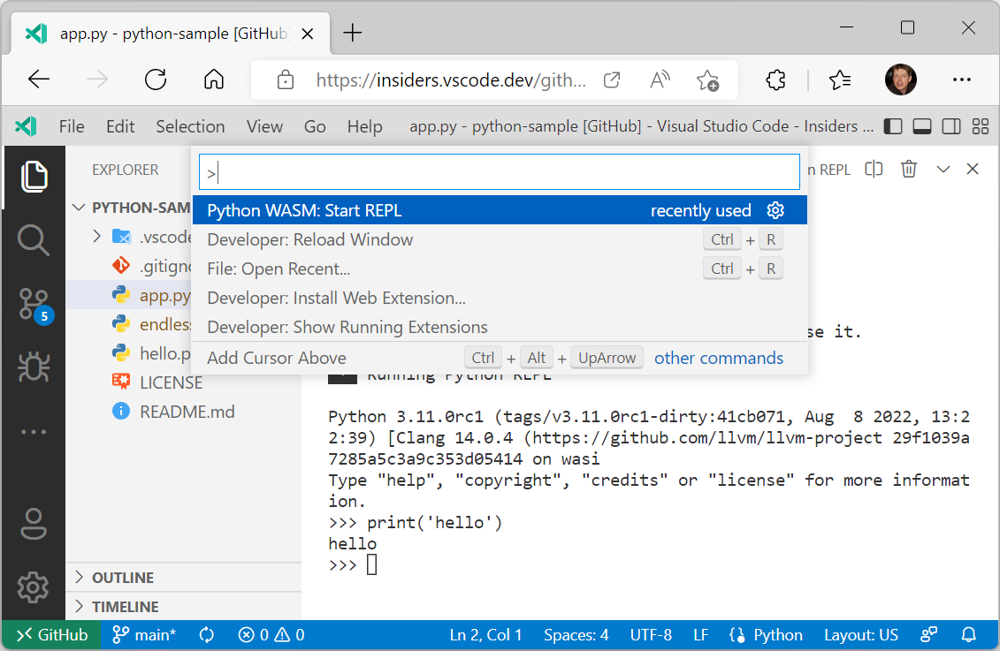

September 2022 (version 1.72)
Downloads: Windows: User System Arm64 | Mac: Universal Intel silicon | Linux: deb rpm tarball Arm snap
Update 1.72.1: The update addresses these security issues.
Update 1.72.2: The update addresses these issues.
Welcome to the September 2022 release of Visual Studio Code. There are many updates in this version that we hope you'll like, some of the key highlights include:
- Tool bar customization - Hide/show tool bar actions.
- Better editor autoscrolling - Scrolling speed tuned to cursor location.
- Extensions view updates - Highlights extensions with updates or needing attention.
- Search results in a tree view - Review search results in either list or tree view.
- Nested Git repo support - Detects and displays nested Git submodules.
- Terminal Quick Fixes - Suggestions to correct command typos and set an upstream remote.
- Pin frequently used tasks - Pin tasks to the top of the Run Task dropdown for quick access.
- Markdown link validation - Automatically check header, file, and image links.
- GitHub Enterprise Server authentication - Improved login workflow no longer requires PAT.
- Dev Containers Features - Easily add and share functionality for development containers.
- VS Code Community Discussions - Connect with other VS Code extension authors.
If you'd like to read these release notes online, go to Updates on code.visualstudio.com.
Insiders: Want to try new features as soon as possible? You can download the nightly Insiders build and try the latest updates as soon as they are available.
Workbench
Hide actions from tool bars
You can now hide actions from tool bars. Right-click on any action in a tool bar and select its hide command or any of the toggle commands. Hidden actions are moved to the ... More Actions menu and can be invoked from there. To restore a menu, right-click the tool bar button area and select the Reset Menu command. To restore all menus, run Reset All Menus from the Command Palette (⇧⌘P (Windows, Linux Ctrl+Shift+P)).
In the video below, the GitLens extension File Annotations menu is hidden from the editor tool bar and then restored via Reset Menu.
Merge editor
Opt in to use the 3-way merge editor
After reviewing all the merge editor feedback we received and thinking about the experience as a whole, we decided to not show the 3-way merge editor by default (the git.mergeEditor setting is now false) when conflicts are detected. The reasoning for this decision can be found in issue #160806.
For files with conflicts, users can now select Resolve in Merge Editor to open the 3-way merge editor:
CodeLens UI
User feedback indicated that checkboxes had some UX problems. The checkboxes weren't very discoverable and they caused confusion by not properly representing all possible states. This iteration, we switched to CodeLens UI that uses textual labels (Accept Incoming, Accept Current, Accept Both):
We will keep iterating on this design and closely monitor all the feedback we get.
Result file recomputed from scratch
In the last iteration, we tried to design the merge editor as an alternative view of a file with conflicts. Instead of showing conflict markers, separate editor panes showed details of the conflict. This design had the advantage that opening the merge editor would not modify the file on disk and user changes made before opening the merge editor could be kept. Unfortunately, this was not only confusing, but also didn't work in all cases, as our merge algorithm and the Git merge algorithm didn't align perfectly.
With this release, if a file with conflict markers is opened in the merge editor, as a first step, we use our merge algorithm to recompute the result file, without inserting any conflict markers. One-sided conflicts are resolved automatically and proper conflicts are reset to the common ancestor of both versions and marked as unhandled.
Base view
The merge editor now has a separate base view that can be used to compare any side with the common ancestor.
Tree view Find control improvements
You can now move the tree view Find control vertically, in order to access the UI elements behind it. Press ⌘F (Windows, Linux Ctrl+F) inside tree views to display the Find control.
Additionally, the tree view Find control will remember the last search term when reopened.
Built-in preview for some audio and video files
VS Code now supports previewing some audio and video file formats:
The following audio formats are currently supported:
- WAV
- MP3
- Ogg
- FLAC
And the following video formats can be previewed:
- H.264
- VP8
For video files, keep in mind that both the video and audio track's media formats must be supported. Many .mp4 files for example, use H.264 for video and AAC audio. VS Code will be able to play the video part of the .mp4, but since AAC audio is not supported, there won't be any sound. You will need to use MP3 for the audio track.
Disable incremental naming
You can now disable incremental file naming in the File Explorer with the new disabled value for the explorer.incrementalNaming setting. This value disables logic for changing the file name on paste within the File Explorer. If the file name is already present, you will be prompted to overwrite the existing file, similar to most native explorers.
Warning when editing inside VS Code application folder
When editing files inside the VS Code application folder, a warning is now shown in the editor. Accidentally modifying files in the application folder is a common mistake and not usually what someone intended.
Editor
Improved autoscroll behavior
When selecting and dragging, the editor used to scroll in a way that was dependent on the display's frames per second (FPS), sometime making the editor scroll quickly as soon as the mouse reached the editor edges. Now, the editor autoscrolls at a more manageable speed of about one viewport per second when the mouse is close to the edges, and faster when the mouse is further from the editor, independent of the FPS.
In the video below, the scroll rate increases as the mouse cursor moves down away from the editor.
Improved hover
The editor hover used to be very aggressive in hiding itself, especially when the mouse was going over an empty area of the editor. This made it difficult to reach some of the actions shown in the hover. Now, the hover will stay visible as long as the mouse is moving towards it. The setting "editor.hover.sticky": false reverts to the previous behavior.
In the "After" video on the right, it is much easier to select a Quick Fix from the hover:
New Code Action groups
There are two new groups available in the Code Action control, Inline and Move.
These groups correspond to that refactor.inline and refactor.move Code Action kinds.
New Code Action colors
You may notice that the Code Action control also looks a little different this iteration. The styling was updated to use more appropriate theme colors. The biggest change is that the control body now uses editorWidget.* colors instead of menu.*.
We are still refining these colors, so let us know if they don't work well with a given theme or if any color customization options are missing.
Extensions
Recently updated extensions
VS Code now shows extensions updated during the last 7 days in a Recently Updated section of Updates in the Extensions view.
Extensions requiring attention
VS Code now shows extensions requiring attention sorted to the top of the default Installed section of the Extensions view. This includes extensions that have a pending update or have been updated or disabled and require VS Code to reload.
The badge on the Extensions icon in the Activity Bar now shows the number of extensions requiring attention.
Ignore updates for an extension
You can now ignore updates for an extension by clicking the Ignore Updates button in the Update dropdown menu. This will remove the extension from the extensions requiring attention list.
You can undo this action by unchecking the same Ignore Updates button.
Note that installing a specific version of an extension (via Install Another Version) will also ignore updates for that extension.
Sorting of installed extensions
You can now sort the list of installed extensions by Install Count, Rating, Name, Published Date, and Updated Date.
Search
Results displayed as a tree view
You can now view search results in a tree! Just toggle between the list and tree view by clicking on the list/tree icon in the top corner of the Search view.
Theme: Night Owl Light (preview on vscode.dev)
File decoration settings
In search results, the filename badges and colors that reflect file statuses can now be toggled on and off. The settings are Search > Decorations: Badges (search.decorations.badges) and Search > Decorations: Colors (search.decorations.colors).
Theme: Night Owl Light (preview on vscode.dev)
Source Control
Discover nested Git repositories
To address a long standing feature request, this milestone we made changes to repository discovery to add support for nested Git repositories. Depending on the location of the nested repositories, you may need to modify the git.repositoryScanMaxDepth setting (the default is 1 level).
Add support for SSH keys with a passphrase
When an SSH key with a passphrase is used for Git operations, VS Code will now display the quick input control so that you can enter the passphrase for the SSH key. The passphrase is not cached and has to be entered every time a Git operation is performed.
Pull before checkout
This milestone we added a new setting, git.pullBeforeCheckout, to streamline the process of switching branches. When this setting is enabled, if there are no outgoing commits, we will pull from the remote and fast-forward the branch before checking it out.
Repository fetch improvements
For Git repositories with multiple remotes, invoking the fetch command will now display a Quick Pick with the list of all remotes. Users can pick a particular remote to be fetched or to fetch from all remotes.
Abort merge command
There is a new command, Git: Abort Merge, to abort a merge operation that is currently in progress.
Terminal
Terminal Quick Fixes
We're starting to roll out a new feature powered by shell integration called Quick Fixes. This feature comes with audio cue support. Enable it with audioCues.terminalQuickFix for an audible indication that a fix is available.
A Quick Fix is available when a command maps to a set of actions the user will likely take and can be activated via the same keybinding used in the editor Ctrl+. or Cmd+..
Here are the initial supported Quick Fixes:
Git similar command
When a Git command is mistyped, the Quick Fix suggests the similar command.
Git set upstream
When git push is executed and there's no upstream remote, the Quick Fix suggests pushing with the upstream remote arguments.
Git create PR
When a branch is pushed for the first time to the remote, the Quick Fix suggests opening the link to create a PR.

Free port
When a server is launched using a port that is already in use, the Quick Fix offers an action to kill the process and free the port.
Shell integration improvements
The following improvements to shell integration were made:
- Run Recent Command and Go to Recent Directory will now clear the line if it has content (or if it cannot be reliably determined).
- Removed the bash script's usage of the
$PREFIXenvironment variable, which could conflict with some build tools. - Polished the zsh script to fix some edge cases around
$ZDOTDIR. - Better handling of zsh shell integration on machines that are shared between multiple users.
Hyperlink support
Hyperlinks sent from the application running in the terminal are now supported. These allow presenting a label that points to a URL and appear with a dashed underline:
Here's an example of how you could write a link with a label "VS Code" that points to https://code.visualstudio.com:
printf '\e]8;;https://code.visualstudio.com\e\\VS Code\e]8;;\e\\'
Or more generally:
\x1b]8;; <URL> \x1b\ <Label> \x1b]8;;\x1b\'
VT feature support
This version brings support for these VT escape sequences:
DECRQM: ANSI and DEC private mode reporting (CSI Ps $ p) - This sequence allows programs to query various modes the terminal is in, such as wraparound or bracketed paste modes.DECSCA: Protection attribute (CSI Ps " q) - This attribute determines whetherDECSEDandDECSELcan erase content.
Audio bell
The audio bell now works in the terminal and can be enabled via terminal.integrated.enableBell.
Terminal documentation
The Terminal documentation has been refactored and moved into its own table of contents on the VS Code website.
There are now topics specific to:
- Terminal Basics - Get up to speed quickly on the VS Code Integrated Terminal.
- Terminal Profiles - Learn how to customize terminals through profiles.
- Shell Integration - VS Code can provide features such as command status, history, and quick navigation.
- Appearance - Modify the terminal text and cursor styling and colors.
- Advanced - Advanced support for custom keybindings and Unicode and emoji characters.
Hopefully you'll be able to easily find the right documentation when you need it.
Tasks
Pin run task entries
Tasks can be pinned in the Tasks: Run Task list for faster and easier access.

Task completion sound
Tasks play a sound when they finish to enable multi-tasking and improve accessibility. Configure the audio cue via the audioCues.taskCompleted setting.
Languages
Markdown link validation
While working with Markdown, it's easy to mistakenly add an invalid file link or image reference. Perhaps you forgot that the filename used a - (dash) instead of an _ (underline), or perhaps the file you are linking to was moved to a different directory. Often you only catch these mistakes after viewing the Markdown preview or after publishing. VS Code's new Markdown link validation can help catch these mistakes.
To get started, set "markdown.validate.enabled": true. VS Code will now analyze Markdown links to headers, images, and other local files. Invalid links will be reported as either warnings or errors.

VS Code can even catch invalid links to specific headers in other Markdown files!
There are a few settings you can use to customize link validation:
markdown.validate.fileLinks.enabled- Enable/disable validation of links to local files:[link](/path/to/file.md)markdown.validate.fragmentLinks.enabled- Enable/disable validation of links to headers in the current file:[link](#_some-header)markdown.validate.fileLinks.markdownFragmentLinks- Enable/disable validation of links to headers in other Markdown files:[link](other-file.md#some-header)markdown.validate.referenceLinks.enabled- Enable/disable validation of reference links:[link][ref].markdown.validate.ignoredLinks- A list of link globs that skip validation. This is useful if you link to files that don't exist on disk but do exist once the Markdown has been published.
Give it a try and let us know what you think of the new feature!
Extract to link definition for Markdown
Reference links make it easy to use the same link multiple times in your Markdown source:
This [link][example-link] and [this link][example-link] both point to the same place!
[example-link]: http://example.com
This is convenient as you can update both links just by changing one place in your file.
The new Extract to link definition refactoring helps you convert an existing Markdown link into a link definition and reference link. This refactoring will convert all occurrences of a link in the current document. For example, for the Markdown document:
[Markdown](https://daringfireball.net/projects/markdown/) and you: Adventures in [Markdown linking](https://daringfireball.net/projects/markdown/)!
Running Extract to link definition on either of the https://daringfireball.net/projects/markdown/ links will result in:
[Markdown][md] and you: Adventures in [Markdown linking][md]!
[md]: https://daringfireball.net/projects/markdown/
After running the refactoring, VS Code will prompt you for the link definition's name. In the above example, we entered md.
Organize link definitions in Markdown
The new Organize link definitions Code Action (source.organizeLinkDefinitions) for Markdown files will group all link definitions to the bottom of the file, sorts them alphabetically, and removes any unused ones. This can be run using the Source Action command.
For example, in the Markdown source:
Some [link][example] and an image:
![An image of a cat][cat-gif]
[example]: http://example.com
[cat-gif]: /keyboard-cat.gif
[some unused link]: http://example.com/file2
Running Organize link definitions will
Some [link][example] and an image:
![An image of a cat][cat-gif]
[cat-gif]: /keyboard-cat.gif
[example]: http://example.com
Notice how the unused some unused link definition has been removed and the remaining definitions have been sorted alphabetically.
CSS / LESS / SCSS
The CSS language support now understands the @property and @layer at-rules.
Notebooks
Notebook JavaScript output is now evaluated as a module
JavaScript output in notebooks is now treated as a module. This means that variables declared inside the output will no longer leak into other outputs (and in the case of const variables, potentially even prevent other outputs with conflicting variable names from being run).
This also means you can now use import inside of JavaScript outputs:
%%javascript
import { myFunction } from './myModules.js';
console.log(myFunction());
HTML headers supported in the notebook outline
HTML headers in Markdown cells can now be detected and rendered in the notebook Outline view.
VS Code for the Web
'code' in your browser omnibox
There is now a Chrome/Edge browser extension that makes it easier to open your GitHub repositories in vscode.dev.
To get started:
- Install the extension from the Chrome web store.
- Type
codeinto your browser search bar to activate the omnibox. - Search for a GitHub repository by name and hit Enter. Suggestions are populated by your browser search history, so if the repo you want doesn't come up, you can also type in the fully qualified
<owner>/<repo>name to open it, for examplemicrosoft/vscode.
In the video below, the user opens the microsoft/vscode repository in vscode.dev by typing code vscode.
This extension is inspired with many thanks by the Goto GitHub Repo Chrome extension, which was created by Pine Wu, a former VS Code team member.
Take your changes with you when switching development environments
When you are browsing a GitHub or Azure Repos repository such as https://vscode.dev/github/microsoft/vscode, you can use the Continue Working On command to select a different development environment to use with your repository.
Previously, if you had uncommitted changes in your virtual workspace, you would need to push them to GitHub or Azure Repos to view them elsewhere. This milestone, we have added Edit Sessions integration to the Continue Working On feature, so that your uncommitted changes automatically travel with you to your target development environment, such as a GitHub codespace:
In the video below, the user's changes to a JavaScript file that were made when using VS Code for the Web are applied when they create and switch to working in a new GitHub codespace.
With this release, the first time that you use Continue Working On with uncommitted changes, you will have the option to bring your edits to your selected development environment using Edit Sessions, which uses a VS Code service to store your pending changes. These changes are deleted from our service once they are applied to your target development environment. If you choose to continue without your uncommitted changes, you can always change this preference later by configuring the "workbench.editSessions.continueOn": "prompt" setting.
When you are using VS Code for the Web, your uncommitted changes will then travel with you when you use Continue Working On in:
- A new cloud hosted environment in GitHub Codespaces
- A new local clone of your GitHub repository
- A local VS Code instance with the same virtual GitHub repository
When you are using desktop VS Code with the Remote Repositories extension, your uncommitted changes will travel with you when you use Continue Working On in:
- A cloud hosted environment in GitHub Codespaces (available via the GitHub Codespaces extension)
- A new local clone of your GitHub repository
- A new clone of your GitHub repository in a container volume (available via the Dev Containers extension)
- https://vscode.dev
- An existing local folder containing a clone of your repository
Issue Reporting
Increased threshold for issues to 7500 characters
When using the built-in issue reporter to report a problem with VS Code or an extension, there is a limit on the number of characters in the URL used to open the issue on github.com. If you hit this limit, you will see a message in the issue body that says We have written the needed data into your clipboard because it was too large to send. Please paste.. Unfortunately, some users don't notice the message and forget to paste the data into the issue body.
This milestone, we have increased the threshold to 7500 characters. This is because:
- Certain browsers that have a hard limit on the number of characters in a URL are no longer supported (EOL).
- GitHub has its own limit to the number of characters in a URL.
This nearly triples the number of characters included in the URL, which should be sufficient for most users and the clipboard message will be displayed less often.
Issue Reporter used with Running Extensions editor
If you open the Running Extensions editor using the command Developer: Show Running Extensions and select the Report Issue button, it will display the built-in issue reporter. Before, this would take you to a GitHub issue and ask you to paste, and it created a lot of unnecessary and poor quality issues in extension repositories. The extensions Report Issue button now goes through the built-in issue reporter and will let users submit quality extension issues.
Contributions to extensions
Remote Development
The Remote Development extensions allow you to use a development container, remote machine, or the Windows Subsystem for Linux (WSL) as a full-featured development environment.
We've heard your feedback about the naming of the Remote - WSL and Remote - Containers extensions. We intended for Remote in their names to indicate you develop in a "remote" or "separate" WSL distro or development container, rather than traditional local development. However, this is a different use of "remote" than many people use, and it could lead to confusion (for example, is the dev container on my machine?).
Thus, we've updated naming and in-product commands in these extensions to be clearer, renaming them to the WSL and Dev Containers. Links such as the extension identifier in the Marketplace and documentation remain the same, so you shouldn't see breakage in your current use of these two extensions.
Along with the rename, work continued on features and fixes of these extensions as well. You can learn more in the Remote Development release notes.
Dev Container Features
Dev Container Features let you easily add pre-packaged capabilities to your dev containers. Whether it is tools like Git or Docker or support for programming languages such as Go or Java, you can review the list of Available Features and add them to your devcontainer.json. You can also create your own Features to publish and share with others using the Feature template.
GitHub Pull Requests and Issues
There has been more progress on the GitHub Pull Requests and Issues extension, which allows you to work on, create, and manage pull requests and issues. Highlights of this release include:
- Improved support for GitHub Enterprise Server. This includes:
- PAT-less authentication courtesy of the VS Code built-in GitHub Enterprise Server authentication provider.
- Automatic detection when you open a folder with an Enterprise repo and an on-ramp to get set up.
- Fixes for GitHub Enterprise Server bugs.
- Checkboxes for marking files as viewed.
Check out the changelog for the 0.52.0 release of the extension to see the other highlights.
GitHub Issue Notebooks
Workspace edits
The GitHub Issue Notebooks extension showcases the notebook API and also turned out to be pretty handy. In this spirit, we adopted the latest improvements of the workspace edit API. There are new Code Actions that:
- Move/copy cells into new notebooks.
- Allow you to split cells using OR-statements.
- Extract qualified values like
label:buginto variables using snippet edits. - Snippet-based Quick Fixes for value set errors.
Localization
The extension is now fully localized in the 13 languages that VS Code supports. It's also the first extension to be localized using the new Localization API, which means that localization works on desktop and the web.
Jupyter
Cell tags and slideshow editing support
We can now edit cell tags and slideshow types directly in notebook editor without opening the JSON format of the document.
This allows us to parameterize the notebooks for papermill or customize notebooks for nbconvert.
We can now also update notebook cells' slide show type directly through commands to turn the notebooks into slides for presentation.
Both examples above are using the notebook workspace edit API to edit cell metadata. If you are interested in how to support editing other custom cell metadata, you can learn more from the GitHub repositories (cell-tags, slideshow).
Improved command interaction for the Interactive Window
The interactive.input.focus command will now give focus to the most recently used Interactive Window's input box. In the short video below, the commands are being used with custom keyboard shortcuts.
Notebook Delete cell commands are enabled for Interactive Window cells, and can now be undone.
Python file cell folding
"Cells" within a Python file denoted with # %% markers can now be folded in the editor.
GitHub Enterprise Server authentication support
Before now, GitHub Enterprise Server users had to manually create a personal access token (PAT) in order to log in to GitHub Enterprise Server in VS Code (for example, to use with the GitHub Pull Requests and Issues extension). This was a cumbersome process that required users to leave VS Code to create a PAT, make sure they've created it with the right permissions, copy it, and paste it back into VS Code.
No more. Now, the GitHub Enterprise Server login flow is identical to the github.com login flow, and users can log in to GitHub Enterprise Server without needing to create a PAT. To see this experience in action, you can get the GitHub Pull Requests and Issues extension from the Marketplace, set the github-enterprise.uri setting to your GitHub Enterprise Server URI, and give the extension a try. Here's a video demonstrating the new experience:
Theme: Panda Theme (preview on vscode.dev)
Python
Create Environment command
A new Create Environment command has been added that will automatically create a virtual environment or conda environment for Python users in VS Code. Users will be able to trigger the command through the Command Palette, select whether they want to create a new virtual environment with venv or a Conda environment, and finally select their desired interpreter for their project. The command will also install necessary packages outlined in a requirements.txt file that is in their project folder. We hope this new feature streamlines the environment creation process and encourages users to utilize environments for coding best practices.

New environments API for extension authors
The Python API now provides a way for extensions to work with Python environments available in the user's machine as found by the Python extension. Extensions can also use it to access the selected environment path that's used by the Python extension to run scripts, or update it to their preferred one.
Feel free to provide your feedback in issue #18888. Note the API is still not finalized yet, so may still change without providing backwards compatibility based on the feedback.
Python extension template
The Python extension template helps you build a Visual Studio Code extension for your favorite Python tool, such as linters, formatters, or code analysis utilities. The template gives you the basic building blocks you need to build an extension that integrates your tool into VS Code.
Preview features
Settings Profiles
We have been working the last couple of months to support Settings Profiles in VS Code, which is one of the most popular asks from the community. This feature is available for preview via the workbench.experimental.settingsProfiles.enabled setting. Try it out and give us your feedback by creating issues in the vscode repository or commenting in issue #116740.
Settings Profiles indicator
VS Code shows a Settings Profiles indicator at the bottom of the Activity bar. By default, the first two characters of the profile name are shown in the indicator. You can also customize the short name to any two characters or an emoji or a codicon. A codicon can be referenced by using the $(codicon-id) syntax.

A menu is shown when you click on this indicator with a Change Short Name option.
Syncing Settings Profiles
VS Code now supports syncing Settings Profiles across your VS Code instances.
Note: This feature is currently available only in the Insiders release of VS Code.
WebAssembly and Python execution in the Web
In the last couple of month, we worked on bringing WebAssembly (WASM) to VS Code. To enable support, we worked on two things:
- Libraries that enable extensions to execute WebAssembly code. The WebAssembly has transparent access to the files in the workspace and to a VS Code terminal. These libraries are developed in the vscode-wasm repository and published to npm as
@vscode/sync-api-common,@vscode/sync-api-client,@vscode-sync-api-serviceand@vscode/wasm-wasi. The README files of these repositories contain examples on how to use the libraries. - A VS Code extension that supports running Python files in VS Code for the Web (for example vscode.dev and insiders.vscode.dev). The extension is available in the Marketplace as Experimental - Python for the Web. One constraint is that the Python code that you want to execute needs to be hosted in a GitHub repository.
The screenshot below shows running a Hello World program:
You can also start a Python REPL using the command Python WASM: Start REPL.

Please note that both the libraries and the extension are under development and provided as previews. There are limitations in the WebAssembly Python interpreter as well as in VS Code itself. Major limitations in the interpreter are:
- No pip support.
- No socket support.
- No thread support. As a consequence, there is no async support.
However there is support to create your own Python environment, including source wheel Python packages. Check out the extension's README for details.
Limitations in VS Code are:
- No debug support. You can only run a Python file.
- No support for native Python modules.
But stay tuned. We have things in the pipeline to lift some of these limitations.
Extension authoring
Extension debugging in a clean environment
When debugging an extension, there was always the problem that the extension was running in the development environment (user settings and installed extensions) of the author of the extension and not in an environment that was more appropriate for the target user of the extension.
With the recently introduced "profiles" feature, it is now possible to run the extension under development in a different environment by specifying a profile in the extension's debug configuration.
Two scenarios are supported:
- debugging in a clean environment by using an unnamed "empty" profile that gets automatically deleted when extension debugging has stopped.
- debugging in a controlled environment by using a named profile that has been created specifically for the extension under development, and that contains specific user settings and extensions.
This debug configuration shows how to debug in a clean environment with the --profile-temp switch:
{
"name": "Extension",
"type": "extensionHost",
"request": "launch",
"args": ["--profile-temp", "--extensionDevelopmentPath=${workspaceFolder}"],
"outFiles": ["${workspaceFolder}/dist/**/*.js"],
"preLaunchTask": "npm: watch"
}
And here is a debug configuration for debugging in a controlled environment that uses a previously created profile named "extensionContext":
{
"name": "Extension",
"type": "extensionHost",
"request": "launch",
"args": ["--profile=extensionContext", "--extensionDevelopmentPath=${workspaceFolder}"],
"outFiles": ["${workspaceFolder}/dist/**/*.js"],
"preLaunchTask": "npm: watch"
}
Note that when debugging an extension in a remote location (via the Remote Development extensions Dev Containers, SSH, or WSL), using the --profile-temp flag will result in this status message:

This is expected because the temporary profile does not include any extensions, which means that the Remote Development extensions are missing too. For remote scenarios, it is recommended that you create an empty named profile, add the Remote Development extensions to it, and then use the --profile=.... command line option.
Improved workspace editing APIs
Editing notebooks with WorkspaceEdit
Workspace edits can now modify notebooks with vscode.NotebookEdit. The vscode.NotebookEdit class includes static factory functions for creating edits that insert, replace, and delete cells in a notebook:
const currentNotebook = vscode.window.activeNotebookEditor?.notebook;
if (currentNotebook) {
const edit = new vscode.WorkspaceEdit();
// Use .set to add one or more edits to the notebook
edit.set(currentNotebook.uri, [
// Create an edit that inserts one or more cells after the first cell in the notebook
vscode.NotebookEdit.insertCells(/* index */ 1, [
// ... new notebook cell data
])
// Additional notebook edits...
]);
await vscode.workspace.applyEdit(edit);
}
Performing snippet edits with WorkspaceEdit
The new SnippetTextEdit type allows extensions to perform snippet edits with WorkspaceEdit. Snippet edits are similar to regular text edits, but they allow the user to tab through placeholders, insert variables, select from choice element, etc. Learn more about snippets in this guide
Note that snippet edits require a code or notebook editor and can only support snippet edits for a single editor, otherwise they behave like regular text edits.
We believe that combining snippet edits and workspace edits allow for new and more seamless Code Actions and refactorings, like the sample from the GitHub Issue Notebooks extension below.
Creating files with contents with WorkspaceEdit
You can now specify contents when creating files using WorkspaceEdit. To do so, pass the contents with its options-bag:
const edit = new vscode.WorkspaceEdit();
edit.createFile(newFileUri, { contents: new Unit8Array([1, 2, 3]) });
await vscode.workspace.applyEdit(edit);
Contributed webview context menus
The new webview context menu API makes it easy for advanced webviews to customize the context menu that shows when a user right-clicks inside a webview. This new contribution point uses VS Code's normal context menus, so custom menus fit right in with the rest of the editor. Webviews can also show custom context menus for different sections of the webview.
To add a new context menu item to your webview, first add a new entry in menus under the new webview/context section. Each contribution takes a command (which is also where the item's title comes from) and a when clause. The when clause should include webviewId == 'YOUR_WEBVIEW_VIEW_TYPE' to make sure the context menus only apply to your extension's webviews:
"contributes": {
"menus": {
"webview/context": [
{
"command": "catCoding.yarn",
"when": "webviewId == 'catCoding'"
},
{
"command": "catCoding.insertLion",
"when": "webviewId == 'catCoding' && webviewSection == 'editor'"
}
]
},
"commands": [
{
"command": "catCoding.yarn",
"title": "Yarn 🧶",
"category": "Cat Coding"
},
{
"command": "catCoding.insertLion",
"title": "Insert 🦁",
"category": "Cat Coding"
},
...
]
}
Inside of the webview, you can also set the contexts for specific areas of the HTML using the data-vscode-context data attribute (or in JavaScript with dataset.vscodeContext). The data-vscode-context value is a JSON object that specifies the contexts to set when the user right-clicks on the element. The final context is determined by going from the document root to the element that was clicked.
Consider this HTML for example:
<div class="main" data-vscode-context='{"webviewSection": "main", "mouseCount": 4}'>
<h1>Cat Coding</h1>
<textarea data-vscode-context='{"webviewSection": "editor", "preventDefaultContextMenuItems": true}'></textarea>
</div>
If the user right-clicks on the textarea, the following contexts will be set:
webviewSection == 'editor'- This overrideswebviewSectionfrom the parent element.mouseCount == 4- This is inherited from the parent element.preventDefaultContextMenuItems == true- This is a special context that hides the copy and paste entries that VS Code normally adds to webview context menus.
If the user right-clicks inside of the <textarea>, they will see:
New theme variable for active theme in webviews
The new data-vscode-theme-id data attribute in webviews stores the ID of the currently active theme. This replaces the now deprecated data-vscode-theme-name attribute, which tracked the theme's full name (and which also may have been localized):
body[data-vscode-theme-id="One Dark Pro"] {
background: hotpink;
}
If you were using data-vscode-theme-name in your webview, migrate to the new data-vscode-theme-id attributed.
Async notebook renderers
The notebook renderer API now better supports asynchronous notebook renderers. While this was implicitly supported previously, now renderOutputItem can return a Promise to indicate that the output item is being rendered. The renderOutputItem function is now also passed an AbortSignal that is aborted if rendering is canceled.
renderOutputItem(outputItem: OutputItem, element: HTMLElement, signal: AbortSignal): void | Promise<void>;
If your renderer performs any asynchronous work, please adopt these API updates so VS Code can better support your renderer.
Refactor.move Code Action kind
The new refactor.move Code Action kind can be used for refactorings that move code around (such as moving a symbol to a new file or reordering code within a file).
While extensions could previously create Code Actions of the kind refactor.move, this kind is now officially documented and is supported by the new Code Action control.
Selected tree items passed to view/title actions
Commands contributed to view/title menus will receive two arguments: the first is the focused tree node and the second is all the selected items in the tree.
Tree view initialSize contribution finalized
Extensions that contribute views in package.json can use the initialSize property to set the initial size of their views. initialSize works similarly to the CSS flex-grow.
There are some restrictions on when initialSize is applied:
- It's only an initial size. Once a view has been rendered, the
initialSizewill not be applied again. - It's only applied when the extension owns both the view and the view container.
Tree viewBadge finalized
TreeView has an optional viewBadge property that can be used to set a number badge on the view's view container.
Unbound breakpoint warning icon
Debug extensions can now define a hint message when there is an active debug session with unbound breakpoints. It will appear in the header of the Breakpoints view and also when hovering the gray breakpoint icon in the editor. Here's an example of how it's used in the js-debug extension:

This message can be declared in the new strings property in the debugger contribution, like this:
"strings": {
"unverifiedBreakpoints": "Message text goes here"
}
VS Code Community Discussions
There is now a VS Code Community Discussions site for extension authors as a gathering place to ask questions, connect with other developers, and show off great work. There you can find announcements related to the VS Code APIs, post questions or search for existing answers, and check out the Extension Show and Tell.
Proposed APIs
Every milestone comes with new proposed APIs and extension authors can try them out. As always, we want your feedback. Here are the steps to try out a proposed API:
- Find a proposal that you want to try and add its name to
package.json#enabledApiProposals. - Use the latest vscode-dts and run
vscode-dts dev. It will download the correspondingd.tsfiles into your workspace. - You can now program against the proposal.
You cannot publish an extension that uses a proposed API. There may be breaking changes in the next release and we never want to break existing extensions.
Extensible JavaScript notebook renderer
Our built-in notebook renderers now expose an experimental API that lets extensions customize rendering of JavaScript content. This API currently exposes a single hook, preEvaluate, which is invoked before the JavaScript content is evaluated.
To try using this experimental API, your extension needs to extend the vscode.builtin-renderer API.
"contributes": {
"notebookRenderer": [
{
"id": "vscode-samples.my-custom-js-extension",
"displayName": "My custom javascript renderer extension",
"entrypoint": {
"extends": "vscode.builtin-renderer",
"path": "./out/main.js"
}
}
]
}
Your renderer can then register a rendering hook on the vscode-builtin-renderer:
import type { RendererContext } from 'vscode-notebook-renderer';
export async function activate(ctx: RendererContext<void>) {
const builtinRenderer = await ctx.getRenderer('vscode.builtin-renderer');
if (!builtinRenderer) {
throw new Error(`Could not load 'vscode.builtin-renderer'`);
}
builtinRenderer.experimental_registerJavaScriptRenderingHook({
// Invoked before th js has been evaluated
preEvaluate(outputItem: OutputItem, element: HTMLElement, script: string, signal, signal: AbortSignal): string | undefined | Promise<string | undefined> {
// You can either modify `element` or return a new script source here
}
});
}
Test out this new API and let us know what you think!
Event for env.shell changes
The new event env.onDidChangeShell has been added to compliment env.shell, the detected default shell for the extension host:
env.onDidChangeShell(newShell => {
console.log(newShell); // Same value as env.shell
});
Tree item checkboxes
The proposed checkboxState lets you add checkboxes to tree items.
this.checkboxState = {
state: vscode.TreeItemCheckboxState.Unchecked,
tooltip: 'mark file as viewed'
};
Localization as part of the API
This iteration we are introducing a new API to help extensions localize strings. This replaces the previous vscode-nls and vscode-nls-dev modules that were used for localization in the past. Those will continue to work but will not receive any more features. The new API and tooling is designed to be familiar but also easier to use and more flexible. Additionally, including it as part of the VS Code API enables us to provide support for localizing your extensions for both VS Code for the desktop and VS Code for the Web.
Localization for VS Code extensions has four important parts:
The new vscode.l10n API
declare module 'vscode' {
export namespace l10n {
/**
* A string that can be pulled out of a localization bundle if it exists.
*/
export function t(message: string, ...args: any[]): string;
/**
* A string that can be pulled out of a localization bundle if it exists.
*/
export function t(options: {
message: string;
args?: any[];
comment: string[];
}): string;
/**
* The bundle of localized strings that have been loaded for the extension.
*/
export const bundle: { [key: string]: string };
/**
* The URI of the localization bundle that has been loaded for the extension.
*/
export const uri: Uri | undefined;
}
}
The vscode.l10n proposed API is a new namespace and provides a single function t that can be used to declare that a string should be localized. The function can be called with a string or an object with a message property. The function will return the localized string if it exists, otherwise it will return the original string. The function also supports arguments that can be used to format the string and comments that can be used to provide context for translators.
A simple example of using the new API:
import { l10n } from 'vscode';
export function activate(context: vscode.ExtensionContext) {
const message = l10n.t('Hello in {0}!', vscode.env.language);
vscode.window.showInformationMessage(message);
}
In this example, the string Hello in {0}! will be localized if a localization bundle exists for the current language. The {0} will be replaced with the current language (en by default, or fr for French, pt-br for Brazilian Portuguese, etc.). If no localization bundle exists, the string will be returned as-is and formatted with the arguments. You may be wondering where these localization bundles come from. I'll cover that in the next section.
The vscode.l10n API also provides access to the bundle of localized strings or the URI to the bundle of strings. This is intended to be used in subprocess scenarios, which I will cover later.
IMPORTANT: When you use this API, you also need to explicitly declare where the localization bundles are located. This is done by adding a
l10nproperty in yourpackage.json:
{
"main": "./out/extension.js",
"l10n": "./l10n"
}
The l10n property should be a relative path to the folder that contains the localization bundles.
The @vscode/l10n-dev module
The @vscode/l10n-dev module is a new module that is used to generate the localization bundles. You can either use it as a command line tool or as a library. Both are used to generate the localization bundles by scanning for vscode.l10n.t(..) calls from the source code provided.
Here's a simple example of using the command line tool:
npx @vscode/l10n-dev ./src --out ./l10n
This will place a bundle.l10n.json file in the ./l10n folder. From there you can make a bundle.l10n.LOCALE.json file for each locale you want to support. For example, let's say that the command above generates the following bundle.l10n.json file:
{
"Hello": "Hello",
"Hello {0}": "Hello {0}",
"Hello {0}/This is a comment": {
"message": "Hello {0}",
"comment": ["This is a comment"]
}
}
If you wanted to support French, you would create this in a bundle.l10n.fr.json file:
{
"Hello": "Bonjour",
"Hello {0}": "Bonjour {0}",
"Hello {0}/This is a comment": "Bonjour {0}"
}
NOTE: You don't need the comments in the localized bundles since the comments are only useful for translators translating the original bundle.
The @vscode/l10n-dev module can also be used to generate XLF files. The VS Code team generates XLF files that we then give to translators at Microsoft. The translators then give us back the translated XLF files. We then use the @vscode/l10n-dev module to generate the localized bundles from the translated XLF files. We plan on writing a blog post that goes into more detail about our localization process as a whole.
The @vscode/l10n module
Since the vscode.l10n API is only available in the extension host, it cannot be used in subprocesses. For this reason, we have created a new module that can be used in subprocesses to load the localization bundles. The module is called @vscode/l10n and it can be used like so:
import { l10n } from '@vscode/l10n';
// Load the translations for the current locale
l10n.config({
uri: process.env.BUNDLE_URI_FROM_EXTENSION
});
// returns the translated string or the original string if no translation is available
l10n.t('Hello World');
The idea is that your extension-side code, which is responsible for spinning up the subprocesses, will use the vscode.l10n.contents or vscode.l10n.uri APIs to pass the bundle or the URI of the bundle to the subprocesses. The subprocesses can then use the @vscode/l10n module to load the bundle and use the t function to translate strings. The t function used by the @vscode/l10n module will also be picked up in the @vscode/l10n-dev module so that the strings can be extracted and localized using one process.
The package.nls.json file
Nothing has changed with respect to the package.nls.json file. It is still used to declare the default strings that should be localized and should be next to the package.json. You still can have package.nls.LOCALE.json (where LOCALE is something like de or zh-cn) and the strings declared in that file will be picked up first if the user has set VS Code to that locale. A small example:
Your package.json:
{
"name": "my-extension",
"version": "0.0.1",
"main": "./out/extension.js",
"l10n": "./l10n",
//...
"contributes": {
"commands": [
{
"command": "my-extension.helloWorld",
// The key is surrounded by % characters
"title": "%my-extension.helloWorld.title%"
}
]
}
}
Your package.nls.json:
{
// That same key from the package.json
"my-extension.helloWorld.title": "Hello World"
}
Your package.nls.de.json:
{
// That same key from the package.json
"my-extension.helloWorld.title": "Hallo Welt"
}
Summary
There's certainly a lot here to digest, but hopefully this gives you an idea of the direction we're taking with localization in VS Code extensions.
If you're interested in a full example, you can check out the l10n-sample.
If you have questions or feedback, you can let us know in the following places:
- The API proposal of vscode.l10n
- The vscode-l10n repo (home of the
@vscode/l10n-devand@vscode/l10nmodules)
Log output channel
The vscode.window.createOutputChannel API now has a new log boolean option that can be used to create an output channel that is only used for logging.
/**
* Creates a new {@link LogOutputChannel log output channel} with the given name.
*
* @param name Human-readable string which will be used to represent the channel in the UI.
* @param options Options for the log output channel.
*/
export function createOutputChannel(
name: string,
options: { readonly log: true }
): LogOutputChannel;
The LogOutputChannel supports following methods to log messages
trace(message: string, ...args: any[]): void;
debug(message: string, ...args: any[]): void;
info(message: string, ...args: any[]): void;
warn(message: string, ...args: any[]): void;
error(error: string | Error, ...args: any[]): void;
The log output channels created by extensions are shown as separate entries in the Output dropdown view. Messages written to this log output channel are represented in the same format as the VS Code log messages.
Engineering
Towards "cross origin isolation"
We have made changes to enable cross origin isolation for VS Code desktop and vscode.dev. This will enable new powerful features like shared array buffers. Both VS Code itself and also extensions and webviews will benefit from this.
Cross origin isolation is currently behind a feature flag and enabling it might have unwanted effects on extensions and webviews that load resources from the internet. You can read more about this in Why you need "cross-origin isolated" for powerful features. We would like to hear your feedback early.
To try this:
- Run VS Code desktop with the
--enable-coi-flag, for example code --enable-coi`. - Run vscode.dev and append the
vscode-coiquery.
To check that cross origin isolation is enabled use the Application-tab of Dev Tools or check the value of the crossOriginIsolated global variable.
Improved startup performance
We reserved engineering time this milestone to improve the startup time it takes from launching VS Code to seeing a blinking cursor in the text editor. We always keep track of our performance numbers and noticed a slight degradation at the end of last milestone that we wanted to address.
This was a team effort where everyone was contributing various changes throughout the source code. A couple of highlights are mentioned here.
No more sync fs calls
We typically avoid the synchronous variants of the Node.js fs API knowing that these methods will stop script execution until the file system request has been resolved. However in a few cases, we were still relying on sync fs execution, especially around opening or restoring windows on startup. We were able to change all these calls to their async variants allowing other script to continue running while waiting for the file system request to return.
More bundling of main entry points
Our main bundles that make up the VS Code application are several megabytes in size, bundled as single file using vscode-loader and minified using esbuild. However in some cases, we did not invest in bundling, specifically for:
- Our Node.js entry point in the Electron main process that is always getting called first.
- Our bootstrap JavaScript files in the Electron renderer process for opening windows.
Bundling in these two areas allows us to reduce the cost of looking up JavaScript files on startup to just one call for the Electron main process and one call for the window itself.
Pushing code to a later phase
The best performance fix is to remove code and never run it, but that is obviously not a solution that is scalable. An alternative is to delay the execution of code to a later phase, for example after the text editor has opened. In this milestone, we again reviewed our various components and pushed some of them to a later phase to not block the critical startup path.
Document internal tools
To analyze performance, we make heavy use of browser's Dev Tools and OS inspection tools. However, we also have some tools that are baked into VS Code. We documented the custom tools in Perf Tools for VS Code Development so that more people can benefit from them.
Faster PR checks
For pull requests, we run automatic unit, integration, and smoke testing. All this happens in parallel but each step requires that our TypeScript sources are transpiled into JavaScript code. Originally, we used the TypeScript compiler for this. It emits JavaScript but also does type checking. The latter is time consuming and for testing not really needed. The overall time cost, by which testing was delayed, was around 5 minutes. We then switched to a custom transpile-only solution that uses the TypeScript compiler API. This was much faster but still took around 2 minutes.
In this milestone, we switched to SWC (Speedy Web Compiler), which is even faster. It now takes around 12 seconds to transpile all our TypeScript sources. This is a huge improvement and allows us to get feedback on pull requests much faster.
Notable fixes
- 27799 macOS: OS services cannot pick up selected text from editor
- 60821 Improved syncing between open recent and the Getting Started page's recent list.
- 156777 5MB/minute memory leak when keeping the process explorer open
- 159862 On macOS Catalina, when in full screen mode, the traffic light button display is misaligned
- 161305 "Window: Title Bar Style" link doesn't work when viewing other Window settings
Thank you
Last but certainly not least, a big Thank You to the contributors of VS Code.
Issue tracking
Contributions to our issue tracking:
- John Murray (@gjsjohnmurray)
- Andrii Dieiev (@IllusionMH)
- Simon Chan (@yume-chan)
- RedCMD (@RedCMD)
- ArturoDent (@ArturoDent)
Pull requests
Contributions to vscode:
- @a-stewart (Anthony Stewart)
- vscode.workspace.applyEdit should honour the files.refactoring.autosave config PR #154079
- Recognize windows-controls-overlay display mode in isStandalone() check PR #160696
- @azatsarynnyy (Artem Zatsarynnyi):
server-main.jsshould respect the--portargument PR #161254 - @babakks (Babak K. Shandiz): Add
onDidChangeShellevent to the API PR #160900 - @Balastrong (Leonardo Montini): Handled case with inline disabled breakpoint gets reactivated PR #155403
- @bvschaik (Bianca van Schaik): Fix wrong matches in multiline file search PR #160665
- @CKeilbar (Chris Keilbart): Removed erroneous references to PREFIX environment variable PR #160909
- @Colengms (Colen Garoutte-Carson): Enable auto-close of multi-line comments in cpp PR #160357
- @Gerrit0 (Gerrit Birkeland)
- Add jsonc registration for TypeDoc config PR #157362
- Add schema for typedoc.json to default jsonValidation PR #157592
- @gjsjohnmurray (John Murray)
- Allow filter widget some vertical movement (#_158549) PR #158583
- Render ThemeIcons (codicons) in markdownEnumDescriptions (#_160496) PR #160498
- Display warning banner when workspace lies within appRoot (#_138815) PR #161534
- @JamieMagee (Jamie Magee): Add
$schematocgmanifest.jsonPR #159779 - @jeanp413 (Jean Pierre)
- Fixes find widget shall be shown per split terminal PR #155361
- Fixes broken image resources in getting started walkthrough PR #159144
- Fix error while executing contributed menu command in ports/item/context PR #161295
- @juihanamshet1 (Jui Hanamshet): adding brace completion for snippet inline completion item PR #160567
- @Litrop: Not add '[' to ipv6 host when '[' exists. PR #157009
- @MachineMitch21 (Mitch Schutt): Use hideFind() and showFind() when retainContextWhenHidden enabled PR #161174
- @matthewjamesadam (Matt Adam): Left-align tooltips for :before decorators PR #159226
- @MichaelChirico (Michael Chirico): Better paired operators for R PR #155882
- @MonadChains (MonadChains)
- Polish command navigation for "empty commands" for non-partial terminal capabilities PR #155551
- Fix explorer.excludeGitIgnore exclusion bug PR #160611
- @mxschmitt (Max Schmitt): chore: use custom debug build of Node.js on macOS e2e tests PR #161308
- @najmiehsa (Najmieh): Edit for the slight ambiguity in wording when adding untrusted files to trusted workspace PR #161168
- @Ninglo (Ninglo): fix terminal contribution schema PR #160863
- @OtherHorizon (Blip blop): Bracket support for #if and #endif in cpp PR #159997
- @pdamianik (Philip Damianik): Use global ZDOTDIR environment variable PR #159783
- @pingren (Ping)
- Expose data-vscode-theme-id attribute in webviews, fix #149661 PR #154635
- Write selection text to hidden textarea on macOS PR #156717
- @pkmnct (George W. Walker): Add abort command for git merge PR #152526
- @susiwen8 (susiwen8): feat: git fetch support fetch specified remote PR #152197
- @tobil4sk: Prioritize PATH executables over local directories in terminals PR #158666
- @trond-snekvik (Trond Einar Snekvik): Default to config icon for the property language PR #158454
- @weartist (Han): fix #158498 PR #158657
- @Yoyokrazy (Michael Lively)
- notebook image cleaning automation PR #159212
- fix in paste filename logic PR #159715
Contributions to vscode-css-languageservice:
- @taroken6 (AudieTaro): selectors may start with combinators PR #279
- @wkillerud (William Killerud): fix: handle scoped packages with _index on package root PR #285
Contributions to vscode-pull-request-github:
- @Thomas1664: Add button to always pull on incoming changes PR #3896
Contributions to debug-adapter-protocol:
- @KamasamaK: Use consistent spelling PR #332